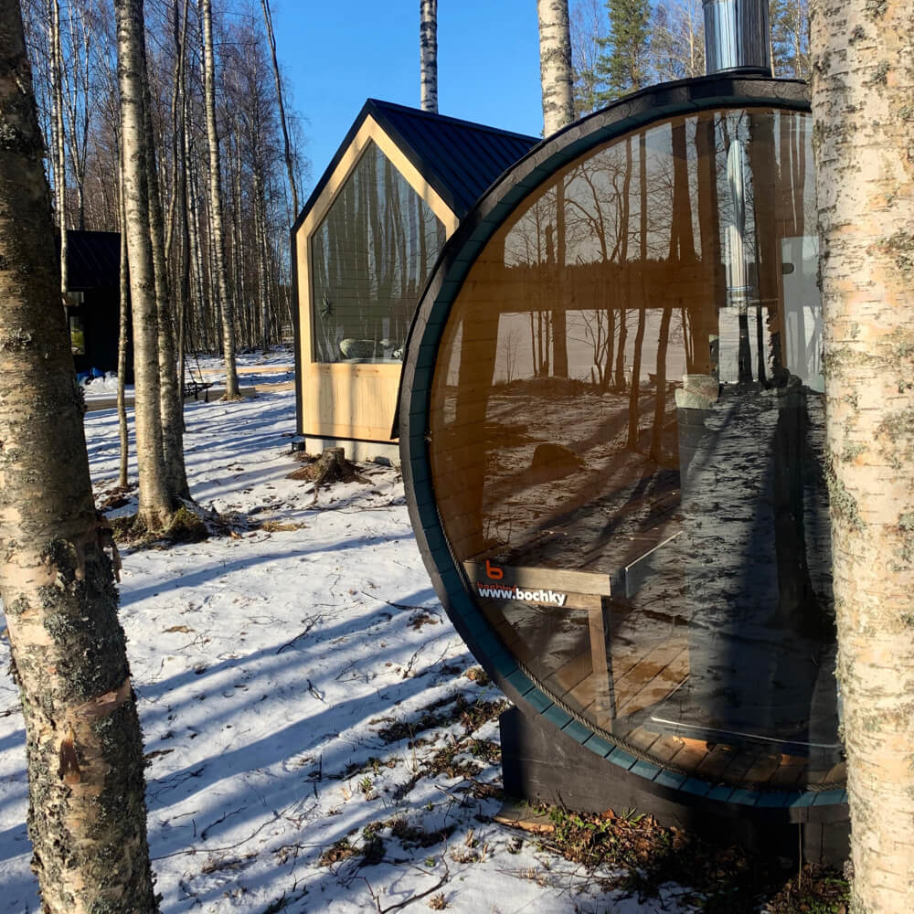
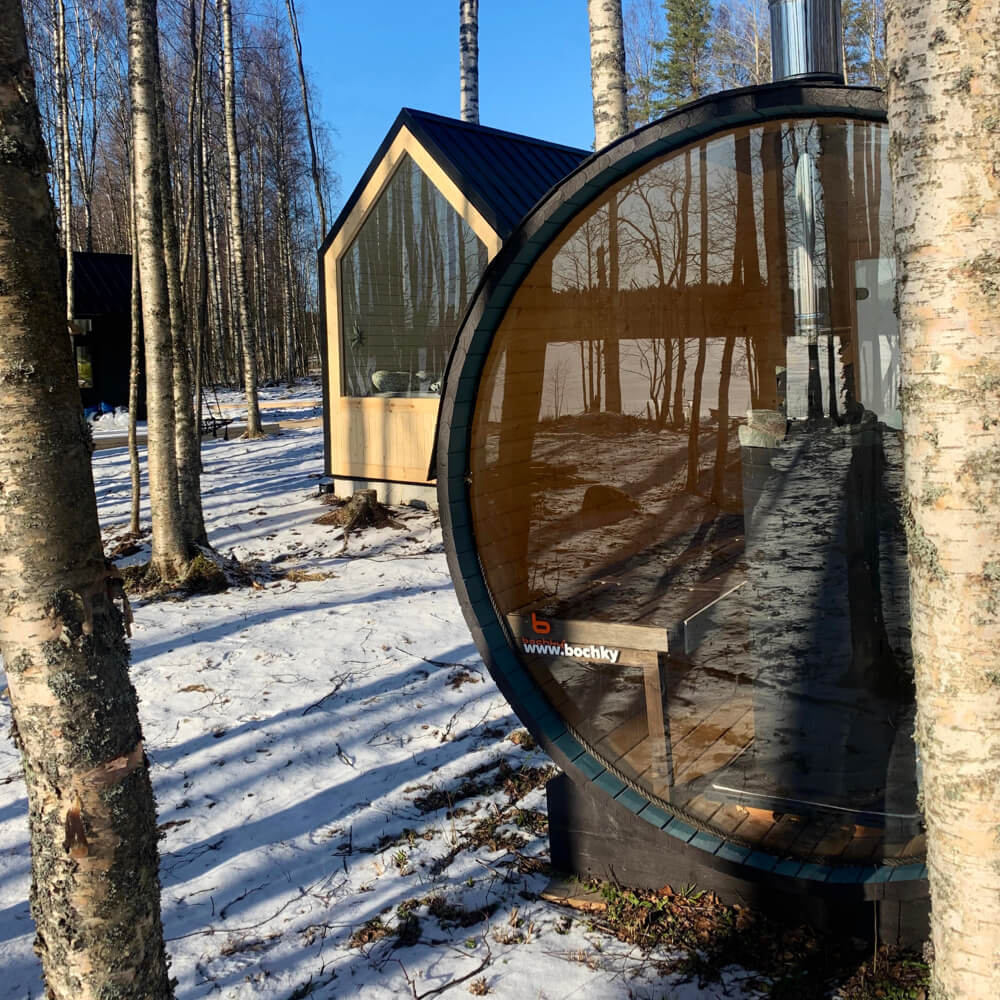

Карелия — это история про уединение, дикую природу, умение слушать тишину и наслаждаться моментом. А в уютных коттеджах «Матриярви», которые находятся на берегу одноименного озера в 220 км от Санкт-Петербурга, сделать это очень просто.
Зимой здесь можно кататься с горки и исследовать на лыжах лес, а париться в бане-бочке, потом пить горячий шоколад и любоваться видом из окна. Летом приятно просто посидеть с удочкой у озера, поплавать на весельной лодке или отправиться собирать ягоды.
- Заезд с 15:00, выезд до 12:00
- Санузлы и душевые находятся в номере
- В домиках есть доступ к Wi-Fi (сигнал слабый)
- На территории глэмпинга есть бесплатная парковка для гостей, заказ пропуска не требуется
- За дополнительную плату гостям также доступны: услуги по аренде инвентаря для активного отдыха, лодок, рыбалка, посещение бани-бочки